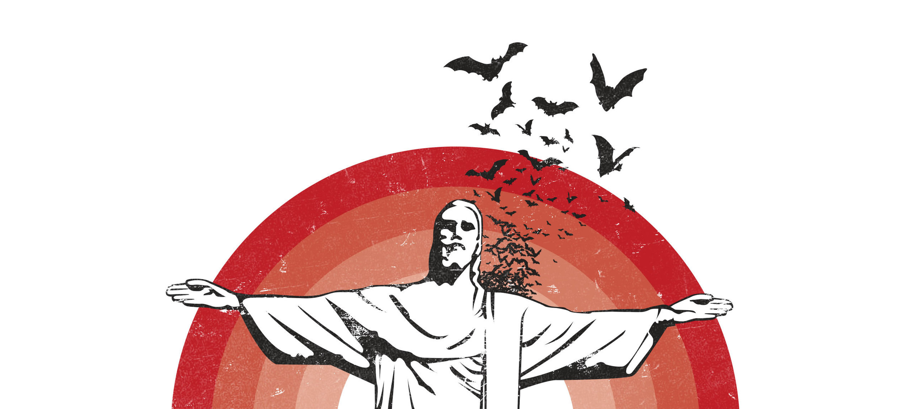

Die Hub
Een klik na alles amptelik. / One click to everything official.
Discografie
Agt releases, 2003–2023. Stream direk — alles gaan na die band.



Tydlyn
2003–2026 — twee dekades van Afrikaanse rock.
Alle feite uit openbare bronne. Fout? Laat weet ons.
Die Storie
The story behind the museum.
Die Storie / The Story:
Ons het die domein gekoop om dit terug te gee. Hulle het gesê: “Laat hom gaan, ons is 100% homegrown .co.za.”
Toe verander ons hom maar in ’n museum.
We bought the domain to give it back. They said: “Let it go, we’re 100% homegrown .co.za.” So we turned it into a museum.
DIE BAND
Fokofpolisiekar is 'n Afrikaanse rock-band vanuit Bellville, Wes-Kaap. Aktief sedert 2003. Sewe ateljeealbums. Die stem van 'n generasie.
Hierdie webwerf is 'n onafhanklike fan-argief. Nie geaffilieer met, goedgekeur deur, of verbonde aan Fokofpolisiekar, hul bestuur, of hul plate-etiket nie.
Alle handelsmerke, album-kunswerk, en musiek behoort aan die onderskeie eienaars. Hierdie site huisves geen kopieregmateriaal nie — alle skakels verwys na amptelike kanale.